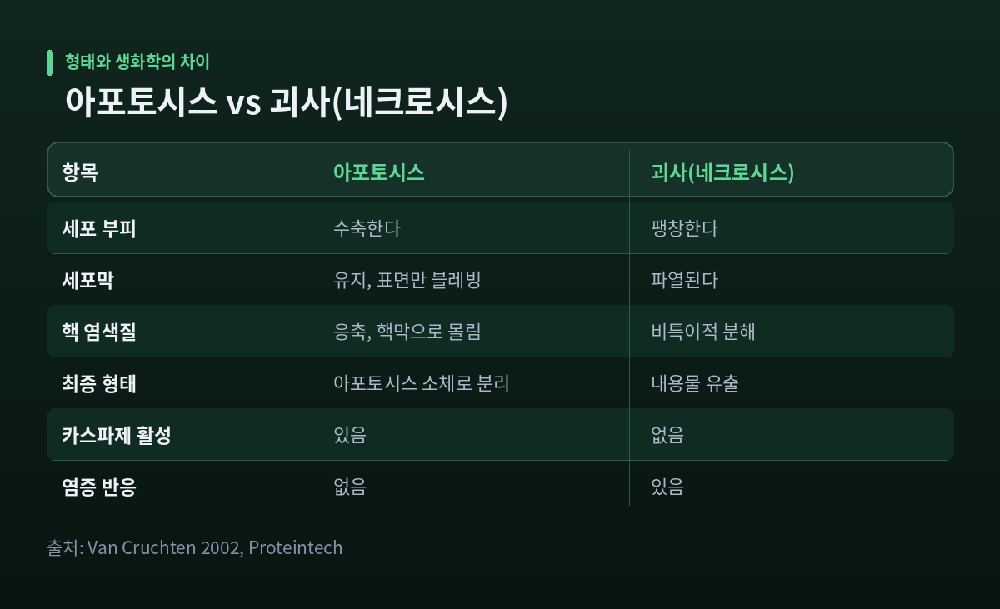
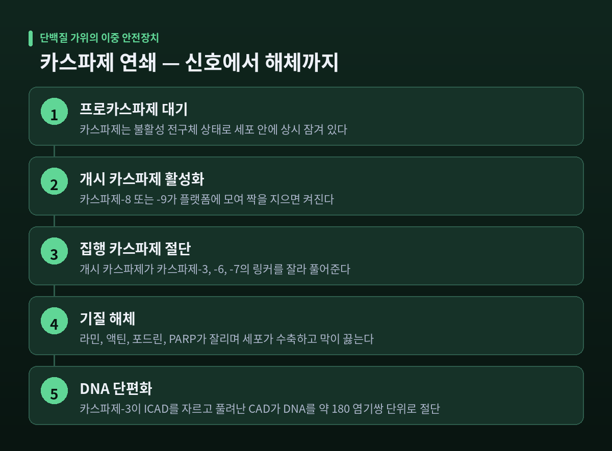
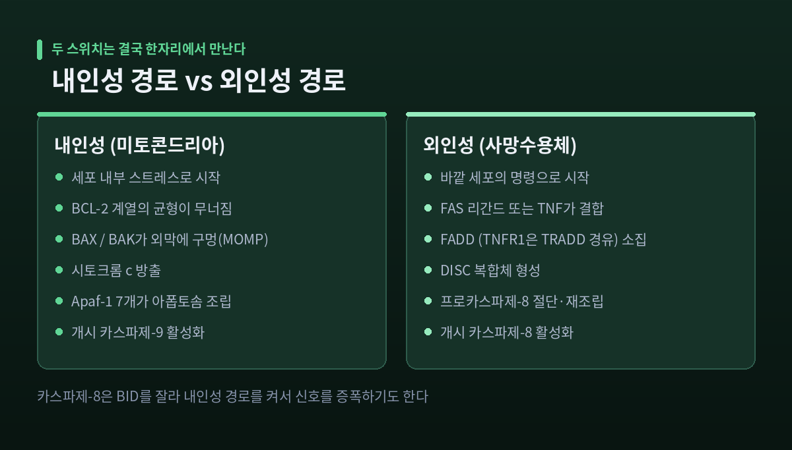
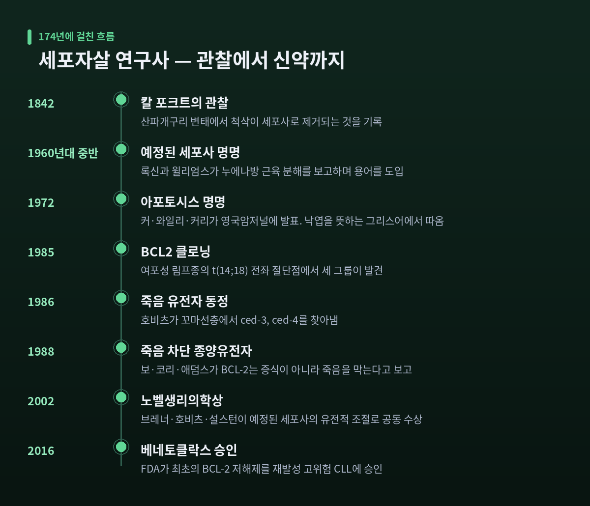
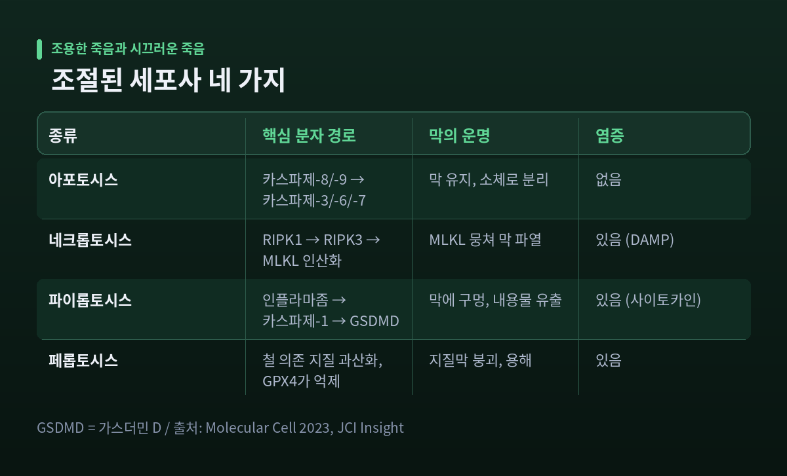

이번 글에서는 세포가 스스로를 분해하는 프로그램, 아포토시스를 정리해 보겠습니다. 죽음을 막는 이야기가 아니라, 죽음을 정확한 시점에 정확한 방식으로 일으키는 장치에 관한 이야기입니다.
먼저 세 줄로 요약하겠습니다.
- 아포토시스는 세포가 카스파제라는 단백질 가위 연쇄를 켜서 스스로를 조각내는, 프로그램된 자기 해체입니다.
- 스위치는 두 군데에 있습니다. 안쪽(미토콘드리아 경로)과 바깥쪽(사망수용체 경로)입니다.
- 이렇게 죽은 세포는 염증을 일으키지 않고 치워집니다. 이 조용함이 아포토시스의 핵심입니다.
죽음에도 두 종류가 있습니다
세포가 사라지는 방식은 크게 둘로 나뉩니다. 하나는 괴사(네크로시스)이고, 다른 하나가 아포토시스입니다.
괴사는 사고사에 가깝습니다. 심한 손상을 입은 세포가 부풀어 오르고, 세포질에 빈 주머니(공포)가 생기며, 미토콘드리아와 리소좀이 터집니다. 마지막에는 세포막 자체가 찢어집니다. 안에 있던 내용물이 그대로 조직에 쏟아지고, 주변은 염증으로 반응합니다.
아포토시스는 정반대입니다. 세포는 쪼그라듭니다. 핵 속 염색질이 단단히 뭉쳐 핵막 쪽으로 몰립니다. 세포막은 끝까지 터지지 않은 채 표면만 부글부글 끓듯 솟아오릅니다. 이 과정을 블레빙이라 부릅니다. 그리고 세포는 막으로 싸인 작은 덩어리 여러 개로 쪼개집니다. 이것이 아포토시스 소체입니다.
포장을 뜯어 쏟는 죽음과, 내용물을 작은 봉지에 나눠 담아 내놓는 죽음의 차이입니다.
생화학적으로도 선이 분명합니다. 카스파제라는 효소의 활성화와, 일정한 크기로 잘린 DNA 단편이 아포토시스에는 있고 괴사에는 없습니다. 괴사 세포에서는 이 두 표지가 관찰되지 않습니다.

이름은 떨어지는 잎에서 왔습니다
이 현상을 처음 본 사람은 1842년의 칼 포크트입니다. 산파개구리가 변태할 때 척삭이 세포사로 제거되면서 척추가 만들어지는 것을 관찰했습니다. 다만 그는 더 깊이 파고들지 않았습니다.
1960년대 중반, 록신과 윌리엄스가 누에나방의 체절간 근육이 호르몬 신호를 받아 분해되는 현상을 보고하면서 '예정된 세포사(programmed cell death)'라는 말을 처음 썼습니다. 발표 연도는 자료에 따라 1964년과 1965년으로 갈립니다.
용어가 정착한 것은 1972년입니다. 커, 와일리, 커리 세 사람이 영국암저널에 논문을 내며 '아포토시스(apoptosis)'라는 단어를 제안했습니다. 그리스어로 나무에서 잎이 지고 꽃에서 꽃잎이 떨어지는 것을 뜻합니다. 애버딘 대학의 그리스어 교수 제임스 코맥이 이 단어를 골라 주었다고 저자들이 밝혔습니다.
예전엔 세포의 죽음을 그저 손상의 결과로만 보았습니다. 지금은 발생 과정에서 반드시 일어나야 하는 정상 기능으로 봅니다. 이 전환의 분기점이 1972년의 그 단어였습니다.
카스파제 — 세포 안에 잠겨 있는 가위
아포토시스를 실제로 집행하는 것은 카스파제(caspase)입니다. 단백질을 자르는 효소, 즉 단백질분해효소입니다.
이름에 작동 원리가 들어 있습니다. 시스테인(cysteine)을 활성 부위에 쓰고, 아스파르트산(aspartate) 잔기 바로 뒤를 자릅니다. 여기서 c-asp-ase라는 이름이 나왔습니다.
중요한 것은 이 가위가 평소에 잠겨 있다는 점입니다. 카스파제는 불활성 전구체인 프로카스파제 상태로 세포 안에 상시 대기합니다. 무기를 늘 품고 다니되, 안전장치를 걸어 두는 셈입니다.
포유류에서 알려진 카스파제는 14종입니다. 역할에 따라 세 갈래로 나뉩니다.
- 개시 카스파제 — 2, 8, 9, 10번. 신호를 받아 연쇄를 시작합니다.
- 집행 카스파제 — 3, 6, 7번. 실제로 세포를 해체합니다.
- 염증 카스파제 — 1, 4, 5번. 다른 종류의 세포사를 맡습니다.
활성화되는 방식이 서로 다릅니다. 개시 카스파제는 불활성 단량체로 떠다니다가 둘이 짝을 지으면(이량체화) 켜집니다. 절단 없이도 켜진다는 점이 특이합니다. 반면 집행 카스파제는 이미 이량체로 존재하되 잠겨 있고, 중간 링커가 잘려야만 켜집니다. 그 절단을 개시 카스파제가 해 줍니다.
안전장치가 이중으로 걸린 구조입니다. 신호가 와야 개시 카스파제가 모이고, 개시 카스파제가 켜져야 집행 카스파제가 풀립니다.

집행 카스파제가 풀리면 세포는 빠르게 무너집니다. 이들이 자르는 기질 목록만 봐도 무엇이 일어나는지 보입니다. 핵막을 지탱하는 라민, 세포 골격인 액틴과 포드린, DNA 수선에 관여하는 PARP, 그리고 젤솔린, PAK2, 국소부착키나제가 차례로 잘려 나갑니다. 세포가 바닥에서 떨어지고, 수축하고, 막이 끓고, 핵이 조각나는 그 모습이 모두 이 절단의 결과입니다.
DNA가 잘리는 방식은 특히 정교합니다. CAD라는 DNA 절단 효소는 평소 억제자인 ICAD에 붙들려 있습니다. 카스파제-3이 ICAD의 두 아스파르트산 자리(D117, D224)를 잘라내면 CAD가 풀려납니다. 풀려난 CAD는 DNA를 아무렇게나 자르지 않고, 뉴클레오솜 사이 간격인 약 180 염기쌍 단위와 그 배수로 자릅니다. 전기영동으로 보면 사다리 모양의 띠가 나타납니다. 이것이 아포토시스의 고전적 증거입니다.
안에서 켜지는 길 — 미토콘드리아 경로
첫 번째 스위치는 세포 안쪽에 있습니다. DNA가 심하게 손상되거나, 산화 스트레스가 쌓이거나, 생존에 필요한 성장인자가 끊길 때 켜집니다.
이 경로의 주인공은 BCL-2 계열 단백질입니다. 한 가문 안에 서로 반대편에 선 두 진영이 있습니다.
- 죽음을 막는 쪽 — BCL-2, BCL-xL, MCL-1. 미토콘드리아 외막을 안정시킵니다.
- 죽음을 실행하는 쪽 — BAX와 BAK. 외막에 구멍을 내는 단백질입니다.
- 저울을 기울이는 쪽 — BH3-only 단백질. 막는 쪽을 붙들어 무력화합니다.
이 셋의 힘겨루기가 곧 세포의 생사입니다. 균형이 깨져 BAX와 BAK가 활성화되면 미토콘드리아 외막에 구멍이 뚫립니다. 이것을 MOMP(미토콘드리아 외막 투과화)라 합니다.
구멍이 뚫리면 미토콘드리아 안에 갇혀 있던 시토크롬 c가 세포질로 쏟아집니다. 원래는 에너지를 만드는 전자전달계의 부품입니다. 그런데 제자리를 벗어나는 순간 사형 집행 신호로 바뀝니다. 같이 나오는 Smac과 Omi도 죽음을 밀어붙입니다.
세포질로 나온 시토크롬 c는 Apaf-1이라는 단백질에 결합합니다. 그러면 Apaf-1 일곱 개가 모여 바퀴 모양의 플랫폼을 만듭니다. 이것이 아폽토솜(apoptosome)입니다.
아폽토솜은 일종의 소집 장치입니다. 흩어져 있던 프로카스파제-9를 한자리에 불러 모읍니다. 앞서 말씀드린 대로 개시 카스파제는 모여서 짝을 지으면 켜집니다. 아폽토솜은 바로 그 만남의 자리를 만들어 주는 역할을 합니다. 켜진 카스파제-9가 집행 카스파제 3, 6, 7번을 자르면 연쇄가 완성됩니다.
밖에서 오는 명령 — 사망수용체 경로
두 번째 스위치는 세포 표면에 있습니다. 내가 망가져서가 아니라, 남이 죽으라고 해서 죽는 길입니다. 면역세포가 감염된 세포나 불량한 세포를 정리할 때 쓰는 경로가 여기에 해당합니다.
세포막에는 사망수용체라는 단백질이 박혀 있습니다. FAS와 TNFR1이 대표적입니다.
FAS는 상대 세포가 내민 FAS 리간드(FASL)와 결합합니다. 결합하면 수용체 여러 개가 뭉치고, 세포 안쪽으로 뻗은 꼬리 부분이 활성화되면서 FADD라는 어댑터 단백질을 끌어옵니다.
TNFR1은 TNF와 결합해 세 개가 뭉친 뒤, TRADD를 먼저 부르고 TRADD가 FADD를 연결합니다. 한 단계를 더 거치는 셈입니다.
FADD는 프로카스파제-8을 불러옵니다. 프로카스파제-8은 DED라는 부위로 FADD에 달라붙습니다. 이렇게 수용체, 어댑터, 프로카스파제가 한 덩어리로 뭉친 복합체를 DISC(사망유도신호복합체)라 부릅니다.
DISC가 만들어지면 프로카스파제-8이 큰 소단위와 작은 소단위로 잘립니다. 잘린 조각들이 큰 것 둘, 작은 것 둘로 재조립되어 활성 카스파제-8이 됩니다.
여기서부터는 두 갈래입니다.
첫째, 카스파제-8이 집행 카스파제 3, 6, 7번을 직접 자릅니다. 신호가 강할 때 쓰는 지름길입니다.
둘째, 카스파제-8이 BID라는 단백질을 자릅니다. 잘린 BID는 미토콘드리아로 가서 BAX와 BAK를 깨웁니다. 즉 바깥에서 온 명령이 안쪽 경로를 켜서 증폭됩니다. 신호가 약할 때 세포는 이 우회로로 화력을 키웁니다.
두 경로는 별개로 시작하지만, 결국 같은 자리에서 만납니다.

조용히 치우는 법 — 포스파티딜세린이라는 표식
아포토시스가 괴사와 가장 다른 지점은 뒷처리입니다.
살아 있는 세포의 막에는 포스파티딜세린(PS)이라는 인지질이 들어 있습니다. 평소에는 막의 안쪽 층에만 있습니다. 바깥에서는 보이지 않습니다.
아포토시스가 시작되면 이 지질이 바깥 표면으로 뒤집혀 나옵니다. 포식세포에게 보내는 신호, 이른바 'eat-me(나를 먹어라)' 신호입니다. 알려진 eat-me 신호 가운데 가장 상징적인 것이 바로 PS입니다.
뒤집는 작업은 두 가지가 동시에 이뤄져야 합니다.
하나는 켜는 일입니다. 카스파제-3 또는 -7이 Xkr8이라는 단백질의 C-말단 꼬리를 잘라냅니다. 잘린 Xkr8은 인지질을 섞어 뒤집는 스크램블라제로 작동합니다.
다른 하나는 끄는 일입니다. 같은 카스파제들이 ATP11A와 ATP11C를 절단해 망가뜨립니다. 이 둘은 평소 PS를 안쪽으로 되돌려 놓는 플리파제입니다. ATP11C에는 카스파제 인식 부위가 세 군데 있습니다.
되돌리는 펌프를 끄지 않으면, 아무리 내보내도 도로 들어갑니다. 그래서 세포는 내보내는 스위치를 켜는 동시에 되돌리는 스위치를 끕니다.
표식을 본 대식세포는 세포를 통째로 삼킵니다. 이 과정을 에페로사이토시스(efferocytosis)라 부릅니다.
여기서 결정적인 사실이 하나 더 있습니다. 포식세포의 MerTK 수용체가 Gas6를 다리 삼아 노출된 PS에 붙으면, 염증을 억제하라는 신호가 안으로 전달됩니다. NF-κB 경로와 톨유사수용체(TLR)에 의한 염증성 사이토카인 생산이 눌립니다.
아포토시스 세포는 조용히 사라지기만 하는 것이 아닙니다. "소란 피우지 마라"는 말까지 남기고 갑니다. 이 조용함이 무너지면 문제가 생깁니다. Xkr8이 결핍된 개체는 루푸스와 유사한 자가면역질환을 일으킨다는 보고가 있습니다. 치우지 못한 사체가 면역계를 자극하는 것입니다.
손은 만들어지는 것이 아니라 깎여 나옵니다
세포자살이 가장 눈에 보이게 작동하는 무대는 발생 과정입니다.
사람 태아의 손은 처음부터 손가락 다섯 개가 뻗어 나오는 형태가 아닙니다. 손가락 사이가 지간 중배엽으로 채워진, 주걱 같은 모양입니다. 이 사이를 메운 조직이 예정된 세포사로 제거되어야 손가락이 분리됩니다.
조각가가 돌을 깎아 형태를 꺼내는 방식과 같습니다. 더하는 것이 아니라 덜어내는 것입니다.
신경계에서도 같은 일이 일어납니다. 뇌 발생 초기에는 신경세포가 필요한 것보다 많이 만들어집니다. 그다음 연결을 제대로 맺지 못한 세포들이 같은 기전으로 제거됩니다. 이렇게 신경회로가 미세 조정됩니다. 다만 사람에서 얼마나 많은 비율이 제거되는지에 대한 구체적 수치는 이번 조사에서 확인하지 못했습니다.
올챙이가 개구리가 될 때 꼬리가 사라지는 것도 같은 원리입니다.
성체에서도 이 작업은 멈추지 않습니다. 피부, 장, 골수처럼 끊임없이 스스로를 갈아 치우는 조직에서는, 새 세포가 들어설 자리를 만들기 위해 낡은 세포가 물러나야 합니다.
다만 하루에 몇 개가 죽는지는 출처마다 추정이 다릅니다. 이 부분은 단정하기 어렵습니다.
- 하루 500억~700억 개로 보는 자료가 있습니다. 같은 기준으로 8~14세 아동은 200억~300억 개입니다.
- 2002년 노벨상 보도자료는 성인에서 하루 1조 개가 넘는 세포가 만들어지고 같은 수가 죽는다고 적었습니다.
- 바이츠만 연구소의 센더와 밀로는 2021년 네이처 메디신 논문에서 하루 교체량을 약 3,300억 개(0.33 × 10¹²), 초당 약 380만 개로 추정했습니다. 질량으로는 하루 80 ± 20 g이고, 개수 기준으로 약 90%가 혈액세포입니다. 이 속도면 체내 세포 수만큼이 약 90일마다 교체됩니다.
추정치의 폭은 넓습니다. 그러나 방향은 하나로 모입니다. 생성과 소멸이 균형을 이뤄야 조직이 유지된다는 것입니다.
꼬마선충 1,090개 중 131개
이 모든 분자 이름들은 어디서 나왔을까요. 출발점은 길이 1mm짜리 벌레였습니다.
꼬마선충(C. elegans)은 투명합니다. 세대 시간도 짧습니다. 덕분에 세포가 나뉘고 사라지는 과정을 현미경으로 직접 따라갈 수 있습니다.
숫자가 놀랍습니다. 발생 과정에서 세포 1,090개가 만들어지고, 그중 정확히 131개가 예정된 세포사로 제거됩니다. 남는 것이 성체 자웅동체의 체세포 959개입니다. 이 계보는 불변입니다. 어느 개체를 잡아도 똑같은 순서로 똑같은 세포가 죽습니다.
정해진 각본대로 죽는 배우가 131명 있는 연극인 셈입니다.
2002년 10월 7일, 카롤린스카 연구소는 이 연구를 이끈 세 사람에게 노벨생리의학상을 수여했습니다.
- 시드니 브레너 — 1974년 논문에서 EMS라는 화학물질로 꼬마선충 게놈에 특정 돌연변이를 유도할 수 있음을 보여 판을 깔았습니다.
- 존 설스턴 — 1976년 논문에서 수정란부터 959개 세포까지 모든 분열을 추적하는 기법을 세웠습니다. 특정 세포가 항상 죽는다는 사실을 밝혔고, 죽은 세포의 DNA 분해에 필요한 nuc-1 유전자를 찾았습니다.
- 로버트 호비츠 — 1986년 논문에서 최초의 진짜 '죽음 유전자' ced-3와 ced-4를 동정했습니다. 이어 ced-9가 이 둘을 붙들어 죽음을 막는다는 것을 밝혔습니다. 사람 게놈에 ced-3 유사 유전자가 있다는 것도 그가 보였습니다.
egl-1, ced-3, ced-4의 기능이 사라진 돌연변이체에서는, 죽어야 할 131개 세포가 그대로 살아남습니다. 유전자 몇 개가 죽음의 각본 전체를 쥐고 있다는 뜻입니다.

그리고 이 벌레의 유전자들은 사람에게 그대로 대응합니다.
| 꼬마선충 | 사람 | 역할 |
|---|---|---|
| ced-3 | 카스파제 계열 | 집행 |
| ced-4 | Apaf-1 | 소집 플랫폼 |
| ced-9 | BCL-2 | 죽음 차단 |
| egl-1 | BH3-only 단백질 | 차단을 해제 |
벌레에서 사람까지, 자살 프로그램의 뼈대는 거의 바뀌지 않았습니다.
암은 너무 많이 자라는 병이자, 죽지 않는 병입니다
BCL2 유전자는 원래 암 연구에서 나왔습니다. 사람 여포성 림프종에서 관찰되는 t(14;18) 염색체 전좌의 절단점에서, 1985년 세 연구 그룹이 각각 이 유전자를 클로닝했습니다.
처음에는 여느 종양유전자처럼 세포를 더 빨리 증식시킬 것이라 예상했습니다. 결과는 달랐습니다.
1988년 보(Vaux), 코리(Cory), 애덤스(Adams)가 네이처에 발표한 연구는 BCL-2가 세포를 더 만들어내는 것이 아니라, 죽어야 할 세포가 죽지 못하게 막는다는 것을 보였습니다. 증식 촉진이 아니라 죽음 차단으로 작동하는 최초의 종양유전자였습니다.
암을 보는 관점이 여기서 한 번 꺾입니다.
하나한과 와인버그는 2000년 1월 셀에 실린 '암의 특징(The Hallmarks of Cancer)'에서 '세포사 저항(Resisting cell death)'을 원래 여섯 가지 특징 중 하나로 꼽았습니다. 이 목록은 2011년에 확장되었고, 2022년에는 14가지까지 늘었습니다. 예정된 세포사의 회피는 종양이 자리 잡는 창건 기전 중 하나로 평가됩니다.
문제는 치료에도 영향을 준다는 점입니다. 기존 세포독성 항암제 상당수는 결국 암세포의 아포토시스를 유도해 효과를 냅니다. 그 프로그램 자체가 고장 나 있으면 약이 잘 듣지 않습니다.
그래서 나온 발상이 BH3 미메틱입니다. 죽음을 막는 BCL-2를 무력화하는 천연 억제자가 BH3-only 단백질이라면, 그 단백질을 흉내 내는 약을 만들자는 것입니다.
베네토클락스(개발명 ABT-199)가 그 결과물입니다. 2016년 4월 FDA가 승인한 최초의 BCL-2 저해제로, 재발성 고위험 만성림프구성백혈병(CLL)이 적응증이었습니다. CLL 세포는 BCL2를 매우 높게 발현하고 그에 기대어 생존하는데, 베네토클락스는 바로 그 의존성을 끊어 아포토시스를 빠르게 유도합니다.
물론 완벽하지는 않습니다. 내성 문제가 보고되어 있고, 이를 극복하기 위한 병용 전략이 계속 연구되고 있습니다. 여기서 언급한 약물은 원리를 설명하기 위한 사례이며, 치료 여부와 방법에 관한 판단은 반드시 전문의와 상담해 결정하셔야 합니다.
반대 방향의 질병도 있습니다. 노벨상 보도자료는 AIDS, 신경퇴행성 질환, 뇌졸중, 심근경색에서 세포가 과도한 세포사로 소실된다고 적었습니다. 자가면역질환과 암은 그 반대로 세포사가 줄어든 상태입니다.
너무 많이 죽어도 병이고, 너무 적게 죽어도 병입니다.
조용한 죽음과 시끄러운 죽음
한동안은 '조절된 죽음은 곧 아포토시스'라고 여겨졌습니다. 지금은 여러 종류가 인정됩니다.
- 네크롭토시스(necroptosis) — RIPK1이 시작하고 RIPK3가 MLKL을 인산화합니다. MLKL이 뭉쳐 세포막을 찢습니다. 터지면서 DAMP라는 위험 신호를 방출합니다.
- 파이롭토시스(pyroptosis) — 인플라마좀이 카스파제-1을 켜고, 카스파제-1이 가스더민 D를 잘라 막에 구멍을 냅니다. 세포질이 부풀고 내용물이 새어 나가며, 염증성 사이토카인이 성숙·분비됩니다.
- 페롭토시스(ferroptosis) — 철에 의존하는 지질 과산화가 막을 무너뜨립니다. GPX4라는 효소가 평소 이를 눌러 둡니다.
셋의 공통점이 있습니다. 모두 막이 터지고, 염증을 부릅니다. 프로그램을 따른다는 점에서는 아포토시스와 같지만, 결말의 소란스러움이 다릅니다.
이들은 서로 얽혀 있기도 합니다. GPX4를 억제하면 지질 과산화물이 늘어나고, 이것이 카스파제-1에 의한 가스더민 D 절단을 촉진해 파이롭토시스성 염증을 키웁니다.
정리하면 이렇게 나눌 수 있습니다. 아포토시스는 조용한 죽음이고, 나머지 셋은 시끄러운 죽음입니다. 시끄럽다고 해서 무질서한 것은 아닙니다. 각자의 각본이 따로 있을 뿐입니다.

정리하면 이렇습니다.
아포토시스는 세포가 망가져서 무너지는 현상이 아닙니다. 평소 잠가 둔 가위를 꺼내, 정해진 순서대로 자기를 해체하고, 이웃에게 폐를 끼치지 않도록 표식을 남기고 떠나는 절차입니다. 손가락 사이가 열리고, 신경회로가 다듬어지고, 낡은 세포가 자리를 비켜 주는 일이 모두 이 절차 위에 있습니다.
"살아 있다는 것은 죽지 않는 것이 아니라, 죽는 시점을 통제하는 것이다."
세포가 스스로를 해체하는 일이 과연 손실이냐고 물으신다면, 저는 그것이야말로 몸이 형태를 유지하는 방식이라고 답하겠습니다.